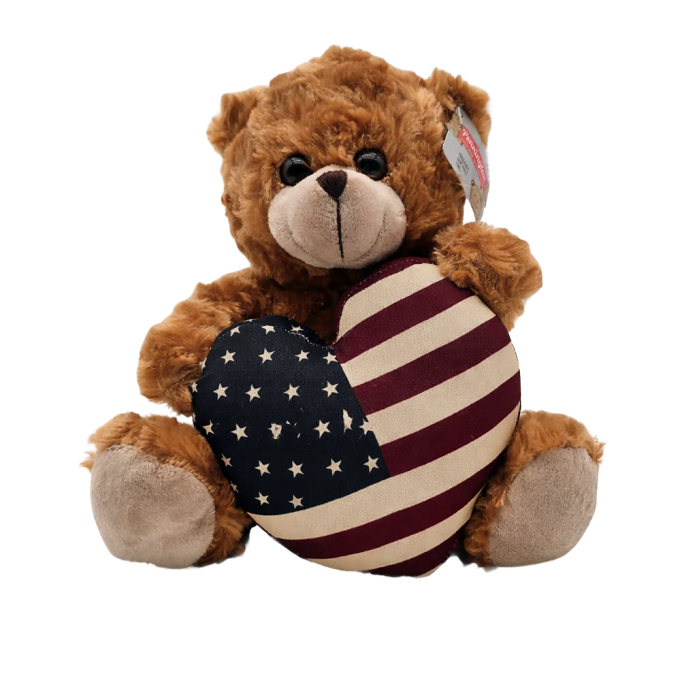
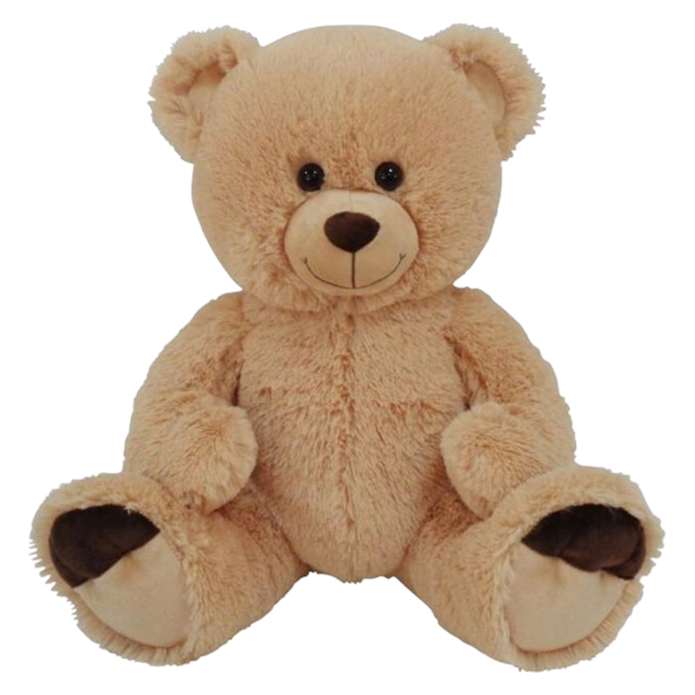

1900-1945 - L'ERA DEI GRANDI MITI
TEDDY BEAR
All'inizio del Novecento accadde qualcosa di rivoluzionario: l’orso, da creatura selvaggia e temuta nelle fiabe, si trasformò nel compagno più dolce e inseparabile di ogni bambino. Nasceva il Teddy Bear, il primo peluche a diventare un fenomeno culturale globale.
TRA STORIA E LEGGENDA
Il nome "Teddy" non è casuale, ma omaggia il Presidente degli Stati Uniti Theodore "Teddy" Roosevelt.
- L'episodio: Nel 1902, durante una battuta di caccia, il Presidente si rifiutò di sparare a un giovane orso intrappolato, ritenendolo un gesto antisportivo.
- La vignetta: L'evento fu immortalato da una celebre vignetta sul Washington Post.
- L'idea: Ispirato dal disegno, il giocattolaio Morris Michtom realizzò un orsetto di pezza e lo espose nella vetrina del suo negozio a Brooklyn con il nome "Teddy's Bear", dopo aver chiesto il permesso al Presidente stesso.



STEIFF E LA PERFEZIONE TEDESCA
Quasi contemporaneamente, in Germania, la ditta Steiff (fondata da Margarete Steiff) presentava al mondo il suo orsetto articolato alla fiera di Lipsia del 1903.
- Materiali pregiati: Con la stessa scatola si poteva costruire una gru, poi smontarla e creare un ponte, un’automobile o un mulino a vento.
- Il bottone nell'orecchio: Il sistema era diviso in set numerati; acquistando i "set di completamento", il bambino poteva espandere la propria officina casalinga all'infinito.

COMFORT IN TEMPI DIFFICILI
Tra le due Guerre Mondiali, il Teddy Bear smise di essere solo un gioco per diventare un simbolo di sicurezza. Durante i bombardamenti o le separazioni causate dai conflitti, l'orsetto era l'unico oggetto che i bambini stringevano a sé per trovare coraggio. La sua forma morbida e il muso rassicurante offrivano un supporto emotivo che nessun soldatino di piombo o bambola di porcellana poteva dare.
